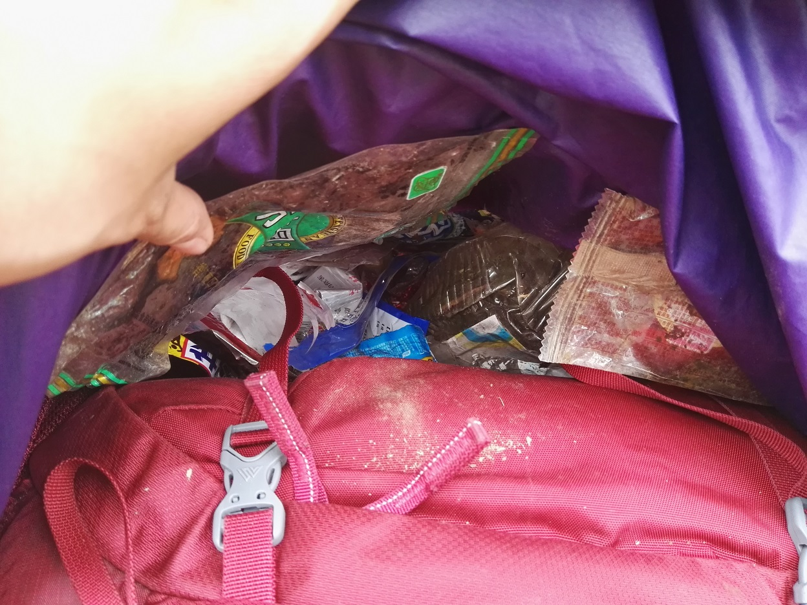
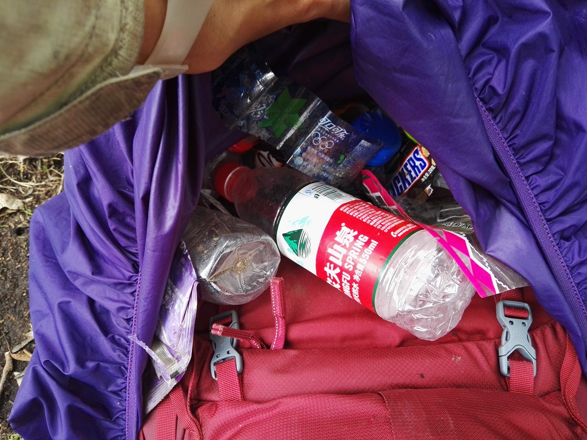
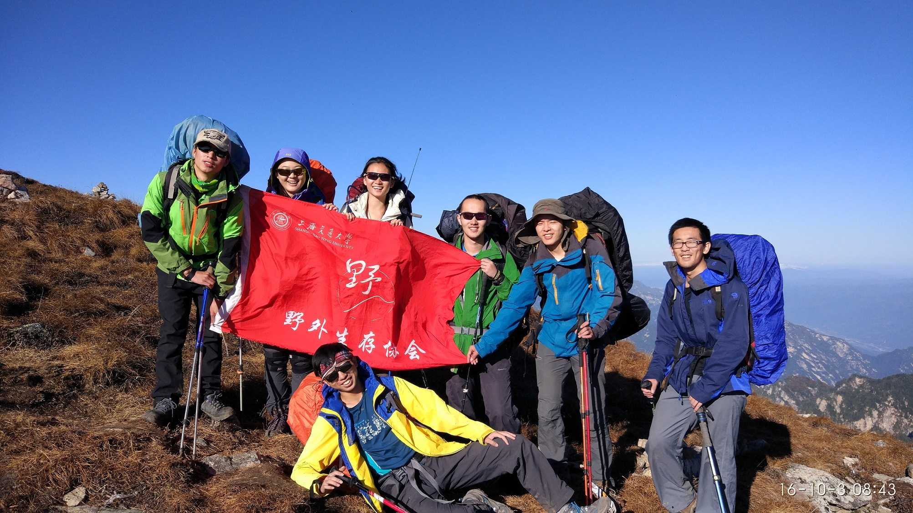
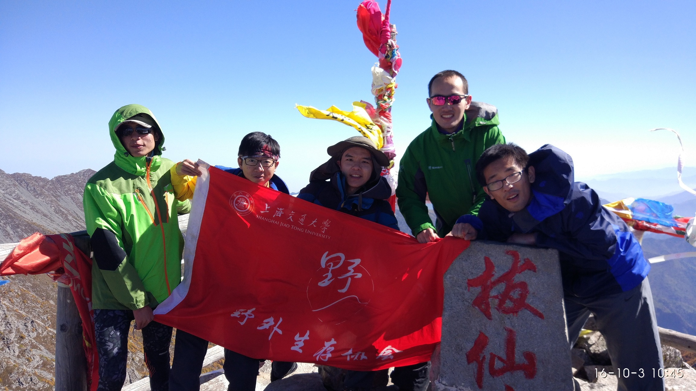
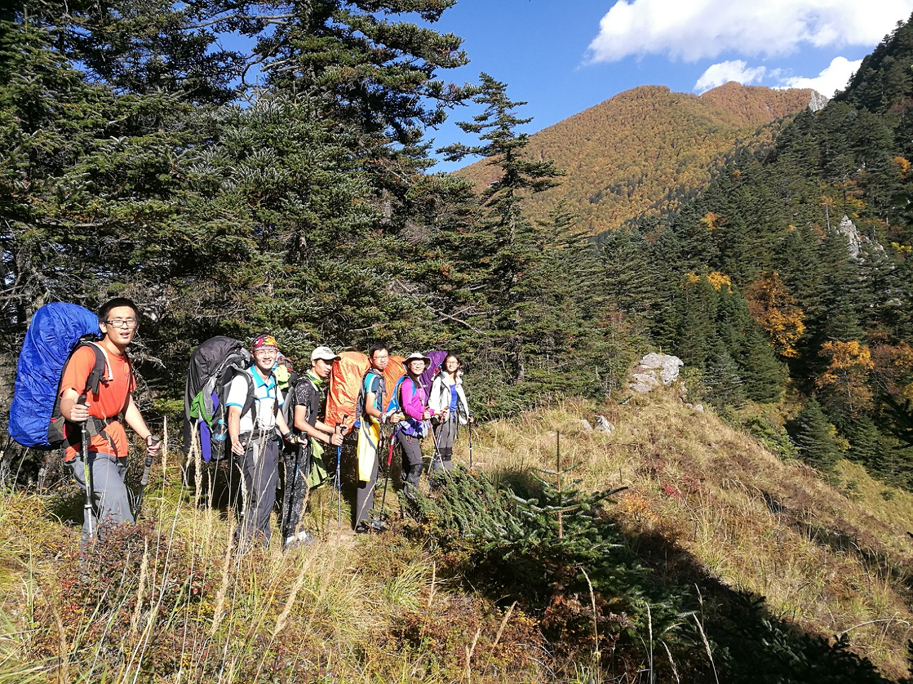
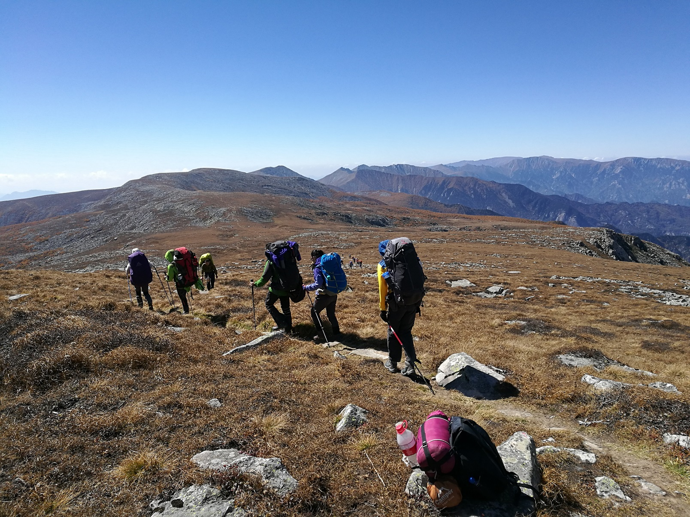
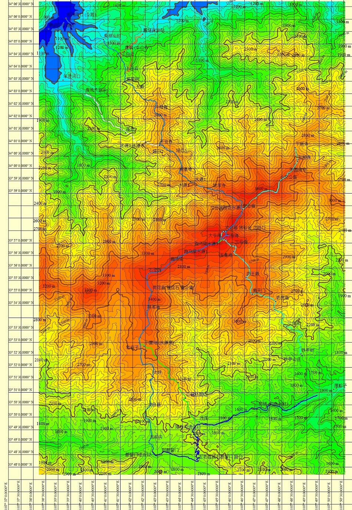
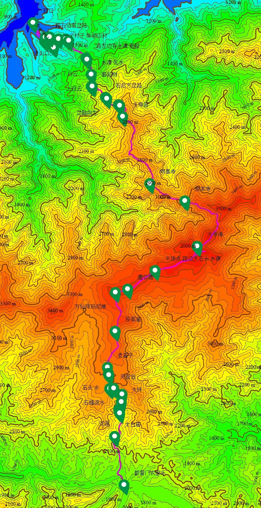
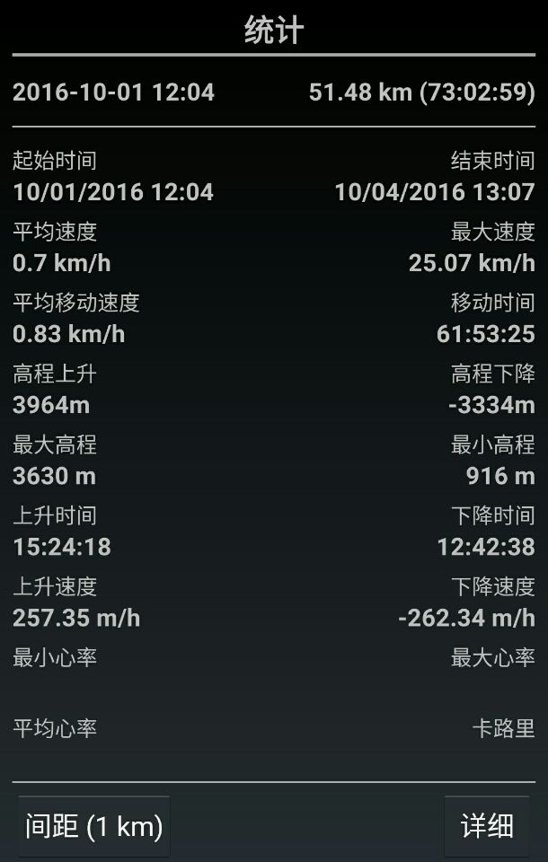

发信人: WiniM(WiniM), 信区: outdoor
标 题: 201610-太白领队总结-wy
发信站: 饮水思源 (2016年10月07日22:15:20 星期五)
加上出发之前有那么几次写的东西，终于把总结写完了……
领队：文颖
压队：张翼飞
队记：李宾锐
队医：吕甘雨
财务：谢礼
装备：魏澄江
队伍里的一个老人：李耀宇
路线：
第一天：鹦鸽柴胡山村-下白云-上白云-骆驼树-大殿
第二天：大殿-斗母宫-平安寺-明星寺-放羊寺-大文公庙
第三天：大文公庙-大爷海-拔仙台(轻装冲)-跑马梁-万仙阵玛尼堆-老庙子
第四天：老庙子-灵官台-大坪-太白庙-都督门
这次太白按原定路线，平安走完，想说的实在太多太多，不知道是因为什么，或是因为很久之前就想走太白，或是因为第一次当领队，或是因为第一次走三天以上的线，或是因为第一次高海拔徒步……
难得到拔仙台脚下，因为对自己的体力没有足够自信，放弃登顶机会，远眺秦岭主峰太白山顶，看着旁边的大爷海，被风吹得半死不活的，守着一体锅极易被吹灭的一点点火，啃着萨其马，心里祈祷着冲顶的人平安下来，又想着遥远的营地，默默祈祷不要走夜路。
难得走到向往已久的跑马梁，看风景的心情却被一场大风吹跑，因怕走夜路而专注于脚下，全力带速度，一共四天的线，跑马梁只走了三小时，可能也算是下山之后非常想走鳌太的原因吧。
二十分钟的夜路，山里骤降的温度，路上心里骂了自己无数遍。到文公庙的一刻，依旧怀着紧张的心情到处找营地，后来从地上站起来都要喘半天，看着其他人烧水、煮面，吃完饭先进帐篷，任由压队和lyy两个人在外面烧水，怀着愧疚的心情渐渐睡去，来不及说一句谢谢。
最后一天下山路，看着满路的垃圾，突然感到莫名的心疼，于是决定捡垃圾。要照顾崴了的左脚，要找路，要看GPS，要照顾到队伍的速度，还决定了捡垃圾。最后是在力所能及的范围内，把看得见的全部垃圾都捡了，看着满满一背包罩的垃圾，真的心疼。
在很久之前我就一直在想可能出现的各种各样突发情况，毕竟自己走了那么多次小队伍线路，没有一次是按原计划走完的，总是会出现各种各样的状况，无论是天意还是人为，总是那么不尽人意，于是对这次的线路感到深深的担忧。但是自己能做的也就只能是认真准备，认真走。
这次本来计划的路线和14年十一太白一样，但是考虑到火车到得比较晚，K字头的还可能晚点，车到都督门之前要走一段山路。。。在查了很多都督门上山的攻略之后，接受了西交（西安交大利涉大川登山社）的建议——把整条线反过来走，这样第一天早上的交通时间会比较短，而且几乎不可能赶不到营地。于是就制定了第一天从北边上，干到平安寺的计划。其实如果像我们这样还要有半天交通时间的话，第一天干到平安寺其实基本上不可能。但是我的计划就定的这样，可能还是对第一天从800+干到2800+没有个概念吧。
这里插一句，出发两周之前，决定和西交一起包车，如果速度差不多的话将一起走。那时候我觉得西交的社团还是蛮牛逼的，起码不会像旦旦那样；而且他们队伍里面一半是老人，找不到路的可能性小很多。
第一天进山，由于上山路比较窄，而且公路有三公里，缓上坡，就决定让司机师傅往另一条岔路开，看能不能发现切回正确路的岔路。没有航迹，我也不敢走。于是就回到岔路口，我们走公路到进山口，于是时间拖得很久，而且体力也消耗了一部分。进山之后发现路比想象中的要陡多了，并不能走得跟想象中一样快。再走了一段路，队伍走得远没有想象中快，这时就放弃了打水上斗母宫扎营的打算，毕竟宁愿第二天早上早点起，也不要背着水哼哧哼哧地赶夜路。五点到大殿的时候，就悠闲地在大殿扎营了。
到大殿之后就知道第二天的行程会比较赶，就决定第二天早上四点半起床，六点半开始走。实际上我们六点过就收拾好了，就等天亮了。西交的早上六点半起，计划八点开始走，实际上好像九点多才出发吧，反正后来就再也遇不到了。我们早上到斗母宫用了两个小时，爬升还是挺多的，林子路比较陡，走得很慢。庆幸自己昨天没决定赶一小时夜路背着水走到斗母宫。大殿一出来就有人被蜜蜂蜇了，后来问了平安寺的大叔，说是专门钻裤裆的那种蜜蜂，叫裤裆蜂= =。平安寺的水源很好，停下休息烧水，但是烧了50分钟，当时我就崩溃了。。。就不应该我一个人在烧水然后让大家自己玩去。平安寺到明星寺的路，虽然等高线看着是平的，但是那绝望的五上五下，消耗了很多的体力。在明星寺吃午饭，烧水，停了一个小时多点，当时也是很崩溃的。。。听说西交的下午三点才从平安寺出发，觉得他们有点惨。后来听说他们打算第三天在大爷海扎营，第四天从铁甲树下了。到放羊寺之前，有队员腿抽筋了，被强行分了一个帐篷和所有的宝矿力水特冲剂，然后帮他分包的几个人都走得有点挫。之后的路就好走多了。
到放羊寺四点钟，还满心欢喜地觉得今天能很早到营地，然后休息了有二十分钟。放羊寺之后的路，突然发现自己体力很不好，就带得很慢，心想着我宁愿走夜路也不要有队员高反。在山里就一边欣赏着渐变的景色，一边慢慢走着，速度非常地舒服，走一段就停两分钟喝水。但是六点半的时候还是在能看得见大文公庙的位置，还有一段距离，那时候我就崩溃了，队员还在持续不断地抽筋，天色渐暗（18:30日落，18:57天黑(民用昏影时间)），我发现日落之后温度降得很快（我之前是知道这点的，但是当时觉得这一点不重要），停下休息会很冷，带起速度会走挫，就处于桓鲛限蔚乃俣纫恢痹谧摺Ｄ腔岫一直在骂自己，为什么不稍微带快一点点，为什么两次烧水不快一点，为什么要休息多十分钟。那会儿拖的每一分钟，都是晚上到营地的时间啊。后来跟压队讨论，压队说我最后一段带的速度已经不算慢了，那时候大家状态都不好。那就是计划的问题，毕竟我们已经是天刚蒙蒙亮就开始走了
到大文公庙的时候，走了大概二十分钟夜路了，风很大，温度比较低，大家都觉得冷，队员状态不太好，我的内心也还紧张。赶紧督促大家穿抓绒和羽绒，有一位队员在别人都穿好保暖衣物的时候还没拆包，我还没开口，压队已经骂了，当时我差点上脚踹。压队比较黑，但是第一次见压队唱黑脸，以前从没见过他骂人。赶紧找营地，发现房子后面有一块地方，没有风，但是有一边不平，只能搭下一顶帐篷。不想让两顶帐篷分开，就决定在外面搭帐篷，但是风超级大而且不能打地钉。后来先在外面搭帐篷占了地方，在里面做饭，然后跟老板交涉后，把不平的地方铲平，搭铝肆蕉フ逝瘛３苑沟氖焙虿恢道是因为累，还是因为空气含氧量较低，还是因为冷，状态很不好，从地上站起来都要喘半天，心一横到外面拿包和登山杖，回来就基本上要死了的样子。队伍里也有人感冒头疼，吃不下东西的。还好状态好的队员也比较积极，大家也还挺团结。身为领队我觉得自己除了烧水和吃面之外啥都不干很不应该，但根本走不动，也只能在心里默默感谢队伍里的三任登山队队长的照顾了。后来想起定闹钟的时候我已经在帐篷里面进睡袋了，本来想等压队进帐篷让他定闹钟，后来给忘了。早上是也不知道被闹钟吵醒的，还是压队用他手机砸醒的
第三天早上起来之后大家状态都好了很多，至少我不喘了，感冒头疼的队员也好了。这一天拔营速度有点慢。走到大爷海之后，风超级大，找了个避风的地方烧水。本来说压队在大爷海烧水，我们去轻装冲顶。后来我和甘雨都决定不去冲顶，于是五个男生就冲顶去了。他们冲顶回来十一点多，我预计走到老庙子路程有13km，可能要走7个小时，跑马梁上风还大，有种隐隐的担心。带到跑马梁上的时候，压队跟我说不要走太快，别把大家带高反了，我的内心是崩溃的，但是还是尽量往快了带，毕竟不想再走夜路了。午饭的时候找了块石头，不能说避风，但是比路上要好一些。这时候我问压队速度怎么样，答曰考虑到风这么大，速度还行了，不然还能走快点。内心再次崩溃，后面感觉要起飞了。到雷公庙的时候，已经快走完跑马梁了，压队说这个速度比想象中要快，天黑前到营地应该已经稳了，这会儿我内心瞬间觉得踏实多了。我并不是一直依赖压队脑子里面的前年的队记记录，我自己也定的有时间节点，但是经过了昨天下午，我就对自己的判断不太自信了，跟压队商量会更踏实。跑马梁本来是我一直很想走的一段，只是风太大，直接被我归为恶劣天气，完全没有看风景的欲望，只是觉得秦岭大梁真的很宽，名不虚传。后来在万仙阵玛尼堆，恍南胱挪灰走到鳌太的路线上去，最后终于找到正确的路了，一开心把左脚崴
screen.width - 200){this.width = screen.width - 200}">
然后大家有了十分钟的休息时间。喷完云南白药，包扎过后，由于下坡比较缓，石头还多，我就一路双杖一支，右脚一跳，蹦蹦跳跳就下去了，回头看队伍不是落得很远，就决定在莲花石再收队。据他们说这段的速度要起飞了。身为领队我知道这样很不应该，但是鉴于那是在跑马梁上，前后都看得见，而且不这样的话自己会走很慢，怕走夜路，就没太在意队伍的长度。
第四天从老庙子下到都督门，捡垃圾的事情一会儿说。过了灵官台之后，马上，就有树倒下来把路挡了，然后回去找路。路上遇到很多很多这样的情况。我们这半天，下山貌似比去年上山都慢。应该是很多树倒下的原因。早在山上就听人说，猪娃沟下山路不好走，因为很多树挡住了路。但是感觉都督门下山也好不到哪里去，比猪娃沟好的地方估计就是新路走的人多，路径明显。到了山脚，我在到处找手机联系西交的人，大家在地上铺防潮垫歇会儿，只有压队从远处回来，告诉我们那边有农家乐。农家乐在哪儿我根本没查，这时候就觉得自己失职，一路自责，大家都很累凭什么就压队一个人去找农家乐
说说这次西交的情况吧。我们出发两周前决定一起包车，如果速度合适的话一起走。但是当看见他们领队，一个在微信上跟我聊了两周的男孩子，我就有点隐隐的不安了。他背了10kg的摄影器材，我当时就想到之前跟复旦走千八的那个27kg。。。后来发现他在考虑如何用航拍机拍片子，我就跟他说，我们一定以走线为主，休息的时候或者在营地可以随便拍，反正不能耽误这一天的行程。领队迷之自信，太白这条线路不用怎么准备，随便搞搞就好了。第一天，他们分队走，前队体能超级好，后队有一个妹子（也是队伍里唯一一个妹子）在拖着速度。在大殿我决定四点半起六点半走之后，他们说第二天行程根本不需要这么赶。我考虑到14年十一的太白是下午四点才到的营地，而且我们是上坡他们是下坡，我就觉得这段路还是留的时间充足比较好。当时和压队，还有李耀宇李宾锐，轮流劝说他们领压队，无果。他们压队指着平安寺到明星寺，说，你看这一段！平的！
screen.width - 200){this.width = screen.width - 200}">
当天晚上发现他们各种腐败，铁的大盘子装菜，铁的大菜刀，各种洋葱番茄鸡蛋，炒菜，只能感叹他们体能真心好啊。第二天他们打算八点拔营，后来据说九点多才能出发，原因不明。后来我们在明星寺吃午饭，听说他们到平安寺了，觉得他们今晚还是有希望赶到营地的。后来听说他们三点从平安寺出发，原因不明。有三个人从平安寺往羊皮沟下撤。再后来，到放羊寺，听说他们决定从铁甲树下，觉得他们行程还是挺稳的，至少安全上没什么问题。我原先跟他们聊的时候，他们的纪律也很严，秦岭里面，严禁走在领队前面，严禁走在收队后面，严禁分队走，严禁走夜路。感跽飧黾吐裳厦鞯亩游榛岷芸科装伞１暇故且桓鼍常走鳌太的社团，风险的管理意识应该比江浙这边要强
最后下山的时候是下午一点多，我们在都督门，没吃午饭。西交队伍领队手机关机。于是托各种人找他们老人的手机号。终于找到一个老人，还有压队的手机。我们原定是一起包车回西安的。听他们说他们队伍早上十点多就到南天门了，那边下山两个小时左右，顶多三个小时。在下午五点的时候，他们压队让我们不用等了，于是我们决定自己包车回西安。于是包车到黑河森林公园门口，并让一个之前联系过的师傅到门口接我们。后来五点多，收到西交领队电话，说已经包好25座的车，和我们一起回去了。那时我拒绝了，说我们已经包车。听说他们在山上玩了三个多小时畔律健Ｕ饧事完全可以由西交领队交代他们社团的老人一声来避免，但是他并没有。这件事我的失误在于，第二天就把对讲机关了，没有记下频率；出发前还没有记下包车师傅的电话。后来两位会长交涉，又由李宾锐跟他们说明情况之后，这件事就这么过了。5号中午西交请我们吃的一顿饭不表。
说说这次背的东西吧。装备清单我在开始训练的时候提到过，在出发前一周公布了，然而有一个队员没有带保温杯，恰好他喝水还特么特别多，于是就一路都只能借别人杯子喝水了。在徐州的时候压队买保温杯，队医提醒他也买一个，他觉得没太大必要。这样的线路保温杯还是挺重要的，如果高反的话会造成一系列问题。同时他也没有带碗，各种蹭晚吃面不表。这次背的公用东西几乎平分，当然也考虑到大家的体能状况。我们的T3是全程拆开背的，本来想强制他们的T3+也拆开背，压队让我别管。第二天队员腿抽筋的时候，我们惊奇地发现！他的T3+外打打在了包的下面』垢我说不都是这样打的么！卧槽旦旦才都是这样打的啊！我们什么时候这么打过帐篷了，重的东西靠上靠背放不知道么！果然跟旦旦出线出多了啊！本来这位队员分到的公用东西只有一顿午饭，是三袋面包一瓶沙拉酱，但是包出奇地重。在营地问了一下，发现他带了一个kindle两个充电宝，一条奥利奥两盒凤梨酥。当场我就想把他扔下去了！正如压队所言，不查你包是觉得你已经大三了，带什么东西上山自己心里有数。
最后说说这次下山捡垃圾。看见路上的垃圾，真的心疼。决定捡垃圾是因为是最后一天了，我觉得自己体力有富余，而且不存在走夜路的情况，毕竟中午就到山脚了。从老庙子到大坪其实并没有很多的垃圾，也就捡了半个垃圾袋而已。从大坪到太白庙那垃圾真的多，捡的时候心都在滴血，装了两个垃圾袋，是欧尚买的大号垃圾袋，估计每袋有1斤。太白庙往下垃圾也还不算太多，就大半个垃圾袋吧。作为领队我觉得这样对队伍的行进速度不好，但是最后一天了，就纵容一下自己吧。我让甘雨帮我带着平稳的速度(甘雨走了那么多次线，我对她带的速度有信心)，自己飞奔下去，以免捡垃圾拖慢整个队伍行进的速度。GPS肯定要看，路肯定要找，在保证队伍不走错路、速度较快的情况下，我把老庙子到都督门路上所有垃圾都全捡了，当然不包括几个垃圾点，还有路上的一条带血的姨妈巾。我知道就算把所有垃圾都捡完，也不能避免一些人在山上扔垃圾，但是我觉得至少路上没有垃圾，总有那么一些人能克制住自己不乱扔垃圾，路上的垃圾增加的速度也会小一些吧。毕竟也只能这么尽自己的一份力了。
这是老庙子到大坪捡的垃圾：
 screen.width - 200){this.width = screen.width - 200}">
这是大坪到太白庙捡的垃圾：
 screen.width - 200){this.width = screen.width - 200}">
————————昏割线！放图！————————
文公庙到大爷海路上
 screen.width - 200){this.width = screen.width - 200}">
拔仙台上
 screen.width - 200){this.width = screen.width - 200}">
放羊寺前 视野突然开阔起来
 screen.width - 200){this.width = screen.width - 200}">
一望无际的跑马梁上
 screen.width - 200){this.width = screen.width - 200}">
做的地图
 screen.width - 200){this.width = screen.width - 200}">
这次记的航迹
 screen.width - 200){this.width = screen.width - 200}">
 screen.width - 200){this.width = screen.width - 200}">
————————后面是干货————————
做地图等资料在网盘里
http://pan.baidu.com/s/1dE1ztrb
【原定计划】
10.1
12:00到山脚，车上吃完午饭。
15:00大殿
若16:00之后到大殿，打水上斗母宫扎营
若17:00之后到大殿，在大殿扎营
（如遇恶劣天气 以上节点往前提半小时）
18:00平安寺
10.2
平安寺出发
中午在明星寺或放羊寺吃午饭
晚上到大爷海扎营
若15:00前到大爷海，先扎营，然后冲顶，回来吃饭
10.3
6:00起床
6:30轻装冲顶看日出
9:00前回到营地
9:30前拔营
中午在跑马梁吃午饭
晚上扎营老庙子
10.4
7:00出发 下山
12:00 到山脚
腐败！！！
如果第一天在大殿扎营：
10.2
大殿出发
中午在明星寺吃午饭
晚上到文公庙扎营
10.3
5:00起床
6:30出发
8:00到大爷海 冲顶
9:30冲顶回来
9:40出发
中午在跑马梁吃午饭
晚上扎营老庙子
10.4
7:00出发 下山
12:00 到山脚
腐败！！！
如果第一天在斗母宫扎营：
10.2
斗母宫出发
9:00 到平安寺休息，煮水路上喝
若16:00前到文公庙，看队员状况(无高反)继续走
若不能，就在文公庙扎营
10.3
5:00起床
6:30出发
8:00到大爷海 冲顶
9:30冲顶回来
9:40出发
中午在跑马梁吃午饭
晚上扎营老庙子
10.4
7:00出发 下山
12:00 到山脚
腐败！！！
【训练】
训练计划如下：
9.10 SAT爬楼15趟 空身
9.11 SUN 慢跑8圈 变速2圈 tabata*2
9.12 MON 爬楼15趟 负重男生10kg女生5kg
9.13 TUE 慢跑10圈 变速2圈 tabata*3
9.14 WED 爬楼15趟 负重男生10kg女生5kg 核心力量 俯卧撑(3*5个动作*3)
9.15 THU 慢跑10圈 变速4 tabata*3
9.16 FRI 爬楼15趟 负重男生15kg女生8kg 核心力量 俯卧撑(3*5个动作*3)
9.17 SAT 慢跑10圈 变速4圈 tabata*4
9.18 SUN 爬楼15趟 负重男生17.5kg女生12kg 核心力量 俯卧撑(3*5个动作*3)
9.19 MON 慢跑10圈 变速4圈 tabata*4
9.20 TUE 爬楼15趟 负重男生20kg女生13kg 核心力量 俯卧撑(3*5个动作*3)
9.21 WED 慢跑10圈 变速6圈 tabata*5
9.22 THU 爬楼15趟 负重男生20kg女生13kg 核心力量 俯卧撑(3*5个动作*3)
9.23 FRI 慢跑10圈 变速6圈 tabata*5
9.24 SAT 爬楼15趟 负重男生22.5kg女生15kg 核心力量 俯卧撑(3*5个动作*3)
9.25 SUN 慢跑10圈 变速6圈 tabata*5
9.26 MON 爬楼15趟 负重男生22.5kg女生15kg
9.27 TUE 校园跑
顺序：爬楼：爬楼-力量-爬楼；跑步：变速-tabata-慢跑
核心力量内容：卷腹 20*3 仰卧举腿 15*3 开合腿 15*3 剪刀腿 15*3 俄罗斯转体20*3 五选三
俯卧撑内容：正常距，宽距，宽距外旋，窄距，鳄鱼爬行 数量看情况可调
tabata内容：快速俯卧撑、高抬腿、折腰俯卧撑、波比跳、登山、波比变式、弓箭步、两头起 每个动作做20s休息10s 两组之间休息2-3min
每隔5-7天休息1-2天
一开始没有说明训练的制度，实际上后来很想把各种翘训练那俩人给t了，然而心肠太软。。唉。。。训练除了练体能以外，还应该训练出队员的团队意识等等，在山上的默契和(收包 拔营)速度也是可以练出来的。
实际上训练强度没有这么大，详见训练日志。有时候协会有事情，而队伍里面核心干事很多，就不训练了，把训练往后推，后面几天的训练计划就没用上。训练之前我考虑过这个问题的了，只是并不知道会取消掉那么多次训练。
我们训练的时候实际上是热身-tabata-变速-慢跑，考虑到的是慢跑之后就没力气跑变速了。但是还是会把两三圈慢跑放到变速之前，因为没慢跑的话变速热身不够，容易受伤。实际上十圈左右的慢跑放在变速前面还是没什么太大问题的。
【路线】
这次暑假无聊的时候就在想太白的事情，闲着没事就把攻略查了 地图做了。在六只脚上看找了很多航迹，主要是今年八月的，把基本上能找到的路线都找出来了，发现基本上所有的航迹细节上都是一样的，那就意味着走在路上几乎没有岔路，就留意了几个岔路口。然后把航迹截了，在google earth上把所有看得见的屋子（营地什么的比较重要）和进山口都确定了位置和海拔，用global mapper手动标了所有的路点。都做完之后，拿到了西交他们社团的航迹，做的很详细，路点标注了营地情况，水源情况，营地费用，有无手机信号。。。航迹很全，和我查到的完全一样（望……）
在此说明一下，我这次无论是大地图（总的）还是小地图（分四天的），都是做的100m等高线，其实太白的话，大地图100m等高线没问题，小地图20-30m的等高线会比较好。出现一个问题就是：lyy：我们这段路有爬升吗？我：几乎没有，就算有的话爬升不超过100米。。100米。。。差点被暴打
这次顺便检验了一下这条路线。我们的路线理论上和六只脚上太白山越野跑的航迹完全一样，路点状况如下：吉列沟口(公路)：我们从北往南来的，有两个左拐的路口，在第一个左拐，那儿有一个景区的牌子(大石头)，拐进去之后不远就有一个岔路口，左边上山，也是我们应该走的路，地图上写的是柴胡山村，不过大巴掉头比较困难(进山口比较宽 可以掉头的)，右边写着药王谷风景区，大巴能开到一个村子，说是柴胡山村= =；进山口：公路大拐弯的一个点就是进山口，一开始很宽是机耕路，很平，然后到岔路口（原先地图上柴胡山村的路点之前），左拐（往房子那边，就进小路了，走十米之后开始陡坡爬升；下白云：房子，到下白云之前有个水潭(死水不干净)，有岔路能下到蒿坪保护站；上白云：房子，继续往前走有小水潭(死水不干净)，没有明显岔路或路标；骆驼树：一开始到那边有一棵倒下的树，有写着骆驼树的牌子，实际上再往上十来米有两间房子才是骆驼树，空间很大（中小队伍搭帐篷没问题），貌似有人住，水源据说是死水；大殿：应该是庙，有人住，空间比较大，搭十顶帐篷没问题，走进院子右拐就是水源（井），这次的水没有漂浮物，就是有点黄，烧开喝没问题，本来说营地费30元/人，我们讲到30元/帐篷，除了庙之外没有适合扎营的平地；一堵墙：就是爬升到一个地方看见的一块石头，比较宽敞的休息点，石头上写着一堵墙，石头附近风有点大；斗母宫：比较大的院子，有房子，没找到水源（有说房子后面有井），风有点大；平安寺：有岔路下到羊皮沟，有房子，有道士种了菜养了狗，还给我们吃了很好吃的萝卜，狗狗是德牧超级超级萌，之后的路在面向房子的右边，水源也在那儿，走五十米左右就到，是水管，流水，很干净；垭口1垭口2：可以无视，这一段是五上五下，路有点难走，有时候有点难找；明星寺：一间房，水源在大仰角的石头下面（手痒TAT），有水管，流水，就是出水稍慢了点（够用了），房子附近地方比较宽敞，视野开阔；放羊寺：宽敞，视野开阔，水源面向房子左边有小路下去，是季节性水源，据说五六月才有，反正十一没有；文公庙附近水源：那边是石海，石头下面有水，比较深，只能听到水声（可能打不到水），附近路窄不可扎营；大文公庙：房子，风超级大，房子后面是个避风的地方，外面扎营人超多里面却没有人，在此吃饭扎营；大爷海：风超级大，房子附近都避不了风，板房可住；地图上大爷海到跑马梁的那一小段绿色航迹可无视，估计是没有走在路上；跑马梁水源3和2：没留意；跑马梁水源1：我们的午饭点，路边的一大堆石头，石头下面有水，不过可能比较深，风超级大；雷公庙：一段小上坡前的残庙，只有几根木头，比较好的休息点；万仙阵玛尼堆：真的很多玛尼堆，没留意走鳌太那边的岔路，路比较好找；莲花石：不能说是庙吧，就路边一堆石头，比较好的休息点，能避一点风；将军庙：残庙；老庙子：营地比较大，残庙不避风，附近草地凹凸不平，垃圾有点多，水源在面向房子的右边；灵官台：就一个台子，往下路陡，难走，没水源；大坪：没水源，到附近水源路远，难走；大坪之后过溪点：前两次过溪都记了路点，水源比较好，基本上到山谷之后旁边就有溪了；太白庙：溪员撸残庙，空地不大（两三顶帐篷吧），垃圾很多；龙洞沟：此路点没意义，可删；都督门：出去就是公路，右边就是隧道口，很近，农家乐在往厚畛子方向，不是很远，拐角处上去就是了，在路边总有车停下问需不需要包车
路况：从进山口的岔路口到斗母宫都是林子里陡坡爬升；斗母宫到平安寺可以走很快，路很平，林子路；平安寺到明星寺：五上五下，还是林子路，上下坡多，据说是在山脊两边翻来翻去，走错一次路；明星寺到放羊寺：路稍微好一点；放羊寺到大文公庙：先是很疏的林子走一会儿，景色不错，然后过几片石海，最后山路就是石头路，下雨过石海比较难；大文公庙到大爷海：景区路，有点爬升，景色不错，就是人多，快到大爷海的时候风突然很大；跑马梁：风超级大，路好认，好走（有时有石海，过得比较慢，路略难找）；莲花石之后进林子，风渐小；老庙子到灵官台郝泛米撸比较平；灵官台到太白庙：路比较陡，偶尔要过石海（有小路），树倒下很多，要找新路，那边的水源离营地不近，关键是路不好走，路上有蜂窝；太白庙到都督门：路比较平可以跑起来
【西交的建议】
[住宿]莺歌镇住宿应该挺多的，我们去年十一住的是这家：怡苑饭庄，电话0917-4958538，15091578128。住宿是二人间三人间那种农家乐，一人15元（不过去年这价钱还得比较厉害，不知道今年还能还得动不）。吃饭和去登山口的车他们都能搞定。农家乐去登山口，单趟，一个面包车50元。
[返回包车]莺歌镇回西安也可以问这个农家乐，估计一个面包车可以讲价到300吧。或者可以找西安的这个师傅18202971820，他只有面包车，估计也是这个价。你们7个人有点尴尬，一个面包车不算司机只能坐6人，山里可以挤挤，但长距离就挤不了了。西安有个不算司机13座的龙师傅15609228700，价钱不太清楚了。
[去程包车]要是原反线路的话，同上；你们要是南坡上太白的话，南坡的坐车要复杂点，因为南坡要走好多山路，西安的师傅不能直接送到，北坡莺歌镇不用走什么山路，西安可以直接过去。去南坡，第一天首先要从西安去厚畛子镇，如果是走铁甲树线路上山就是在厚畛子镇上山，如果是走都督门线路上山，还要从厚畛子坐车去老县城（都督门线路就是在老县城出发进山的）。西安去厚畛子镇途径地名：西安-马召镇-黑河森林公园大门-厚畛子，马召往后都是山路，马召到黑河森林公园大门之间是国道，可开大车，进入黑河森林公园大门之后只能开7座及以下的小车，而且外娴某到去要收费，所以进了黑河之后都是找里面的农家乐坐车的。一般，包大车（比面包车大的）去的话，就直接从西安坐到黑河大门，上面那个龙师父的车应该能讲价到1000吧。进了大门就要叫里面农家乐的面包车了（对了，进大门一人要收大概四五十门票吧），可以找这家：刘长江，13772159820，他是厚畛子镇人，黑河大门到厚畛子一辆面包车单趟150，厚畛子到老县城一辆单趟150～200，他们家住宿一人20，吃饭再另交。老县城的都督门上山不用交门票，厚畛子的铁甲树上山要交门票，一人可能又要四五十，所以感觉其实你们可以改成北坡上山，南坡出山，这样可以省去铁甲树的门票和黑河的门票。如果是包面包车从西安去厚畛子的话，一般西安的师傅不愿意送到黑河门口（太远了，不划算），一般他们就送到山口的马召镇，西安去马召可以找上面那个西安的面包车师傅，一辆车单趟应该能讲到200～250吧。到了马召，让厚畛子的农家乐的人直接出山来马召接进去，马召到厚畛子，一个面包车单趟估计250～300吧。大概就是这么个情况吧。
其实包车、住宿这些都不急的，提前一周问就行啦
话说我们社团估计十一也会发太白，要是我们的时间安排跟你们一样的话，其实可以到时候一起包车
要是我们跟你们分开的话，你们到时候问的时候直接说你们是我们学校的，以前住过他们的农家乐，包过他们的车（我跟你说的那些都是我们以前住过、包过车的人）。对了，你们说的时候直接说是“交大”的，不用说“西安交大”，在这儿说“交大”都知道是我们学校，说“西安交大”他们反而觉得怪怪的。话说之前我去上海有个活动，前期联系的时候一直跟那边人说我是交大的，套近乎，结果到最后他才知道是西安交大，坑了他好久，哈哈
我们一般都是北坡上南坡下，北坡第一天到平安寺差不多大半个白天吧，然后第二天可以到大文公庙或者大爷海，如果是铁甲树出山的话，大爷海一天出山也行，但比较晚，分两天当中在南天门扎营的话，最后两天松松的，如果是都督门出山的话，第三天可以到老庙子，第四天花大半个白天就出山了
如果反过来走：铁甲树上，大半个白天可以到南天门，第二天到大文公庙，第三天可以直接出山但比较赶，分两天当中在平安寺扎营的话时间很松。如果都督门上，第一天花大半天可以到灵官台，第二天到大爷海稍赶，到将军庙稍松，第二天到大爷海的话后两天同上，第二天到将军庙的话，第三天可到放羊寺或明星寺
由于你们1号前半天都要坐车，估计都督门出发也是中午甚至下午一两点了，这样的话，你们的整个行程按照常规速度的话，几个晚上的营地可能都会是小营地，水源可能会有点问题，除非哪天赶路一天到达一个大营地
西交反走主要是为了逃门票，时间快慢都可以通过提前一天住山脚下农家乐的方式来调节的
【交通】
由于要订火车票，这次想卧铺过去，在小学期期间找好了zyf当压队，然后所有队员在小学期结束就定好了，等9月30的票开售，就马上开始买票。8月2号14:30开始卖上海到西安的票，于是我和lbr约好下午两点半准时抢票，准备买Z252(15:52-次日07:57)。特么的我俩都睡过了！睡过了！两点五十起来发现没票了！特么连硬座都没有了！其他车次也都没有了！内心崩溃啊尼玛！遂决定从徐州转车。用百度地图查了一下宝鸡火车站和厚畛子的位置，就打消了直接坐火车到宝鸡这个脑残的想法(原本想坐T116)。后来发现16:00开售苏州到西安的票，下午17:00开售常州到西安的票。这两次都没买到(刚刷新显示有36张票，然后显示我没登录。。。登录回来就悲剧了)。17:30开售徐州到西安的票，也没买到。后和lbr商量后决定买徐州到西安的K245(徐州18:48-西安06:41)，硬卧，在西安还能早点出发。还发生了一些日狗的事情，最终所有人买到票。于是9月9号要买上海到徐州的高铁。于是上海到西安要花掉479！好贵！心疼钱！
我们本来打算下火车之后包车到鹦鸽，后来联系了西交，决定一起包车。于是下火车之后打车到西交。一辆25座的车，西交12人，我们7人，最后面的座椅放包，单程车费1600。回程从都督门包车到黑河森林公园门口（两辆车车费共640），然后换别克7座商务车（车费800），直接回西安。
【装备】
登山包（协会有）
防潮垫（协会有）
睡袋（协会有）（温标-10到0度）
冲锋衣
速干衣（2-4件）（最好是长袖）
速干裤（1-2条）
抓绒衣
抓绒裤（选）
羽绒服（充绒至少100g，或平时冬天穿的羽绒服）
遮阳帽（如果冲锋衣的帽子有遮阳功能可不用）
抓绒保暖帽
头巾（1-2条）
手套（防晒）
头灯（协会有）
登山杖（协会有但质量不保证）
防水袋（可选）
速干袜（2-4双）
保温杯（500ml以上）
个人餐具（碗筷）
墨镜
徒步鞋
登山杖（最好一对）
雪套（协会有）
露营装备（全队）：帐篷（T3，T3+）
锅*2
炉头*2
一体锅*1
气罐 火枫4*G5+1*G2
在山上发现保暖的衣服还是挺重要的；这次运气好，没下雨，也没有积雪，雪套和防水的裤子就没用上；保温杯很重要；速干是短袖还是长袖其实没所谓；手套还是抓绒的好，走跑马梁的时候用；墨镜在文公庙到跑马梁结束都用得上；头灯电池带多了；充电宝下山之后都用得差不多了；气罐是上京东买，让西交的帮忙收的，带多了是因为我的一体锅烧水比较省气。
【食物】
早餐
第一和第三天早餐吃燕麦(一袋有调味的27g和一袋没有调味的30g)，加一些饼干。第二天早上吃土豆泥和山之厨
午餐
每人3片面包 沙拉酱
一共一瓶沙拉酱一瓶千岛酱，省着点吃。压队说不用酱。
晚餐
7个人吃12包泡面，李宾锐买。每顿一块里脊肉 一块肘花
队医提醒大家吃维生素片
路餐
每人总共8块萨其马，两条士力架，全队两盒盐津葡萄，剩下的自己准备
————————昏割线~————————
最后特别感谢压队一路的照顾，然后感谢小猴子给我介绍西交的人，感谢辛苦发装备的装备部部长，感谢教我做地图的各位登山队队长，感谢我们的紧急联系人陈震昊，感谢队医，队记，管财务的和管交通的，感谢老人一路各种帮忙各种提醒，这条线才得以顺利走完。
乱码什么的我真的没有办法了。。每次发长文都这样。。。网盘地址
http://pan.baidu.com/s/1dE2Lpb7
※ 来源:·饮水思源 bbs.sjtu.edu.cn·[FROM: 211.80.54.130]
※ 修改:·WiniM 于 2016年10月07日22:16:29 修改本文·[FROM: 211.80.54.130]
※ 修改:·WiniM 于 2016年10月07日22:23:30 修改本文·[FROM: 211.80.54.130]
※ 修改:·WiniM 于 2016年10月07日22:26:26 修改本文·[FROM: 211.80.54.130]
※ 修改:·WiniM 于 2016年10月07日22:28:45 修改本文·[FROM: 211.80.54.130]
※ 修改:·WiniM 于 2016年10月08日23:21:06 修改本文·[FROM: 211.80.54.209]
|